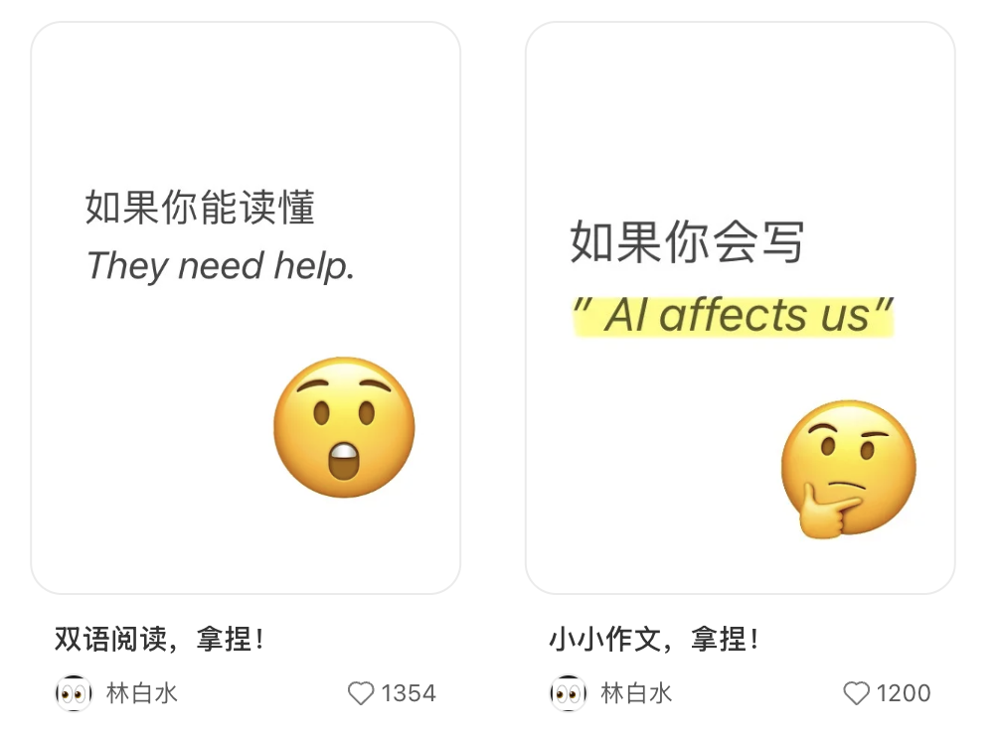

01
我懂 AI：从模型能力到 Agent 系统
淘天 · Agent 自进化Reward / Evaluator · Skill 优化
百度 · AI SearchQuery 改写 · Rerank · 多 Agent 搜索

点击切换；悬浮技术节点查看细节。
真正的壁垒，是整条链路在真实复杂题目上持续可靠。
悬浮节点查看实现思路 ↑
拍照讲题已接近标配，差异来自内容、入口、服务与学习闭环。
长期教研体系、诊断规划与学习设备构成一体化家庭学习场景。
强项：内容与专用硬件从作业检查、搜题和同步学练切入，入口低频次高、数据积累强。
强项：入口与题库数据教师与学习中心网络深厚，并以英语 AI 1 对 1 建立垂直闭环。
强项：教师网络与信任把 AI 诊断、互动精讲、迁移验证与真人介入连续交接。
关键：证明学生真的掌握竞品判断提炼自 《高途智学竞品调研-首版》↗；公开材料仍需结合产品实测验证。